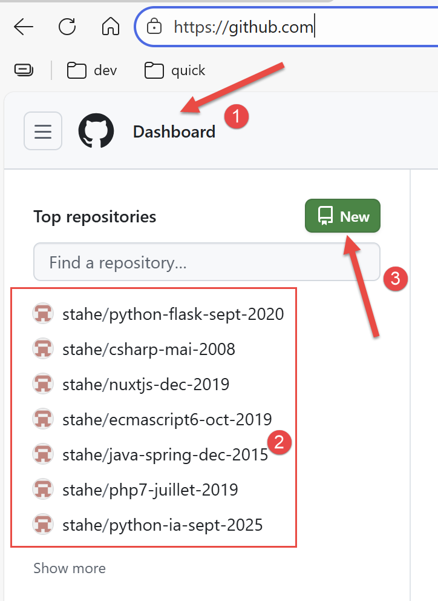
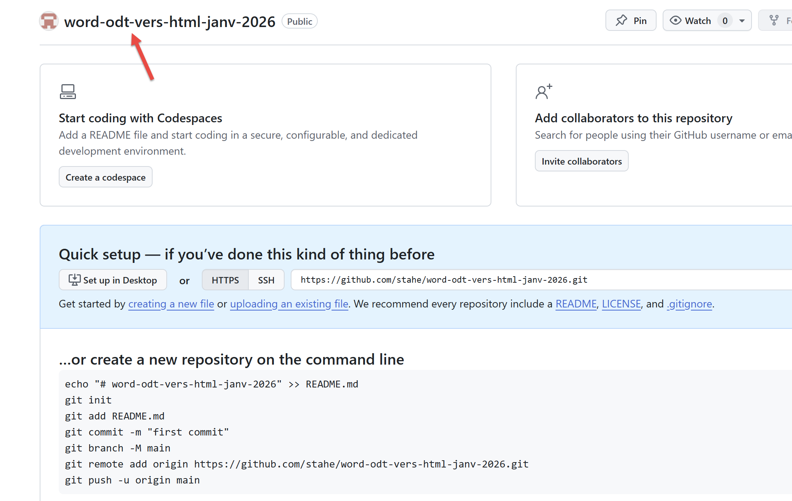
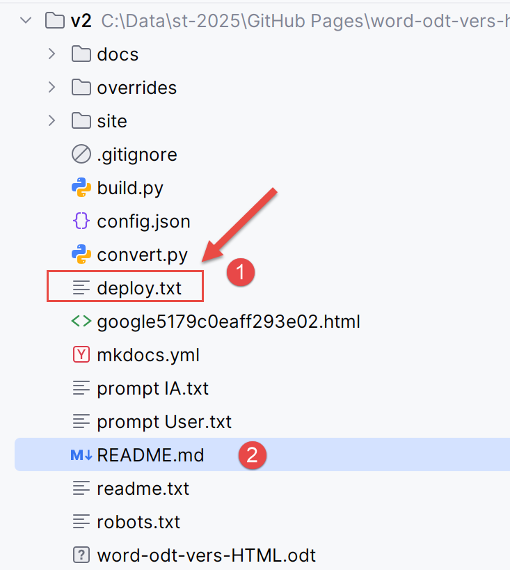
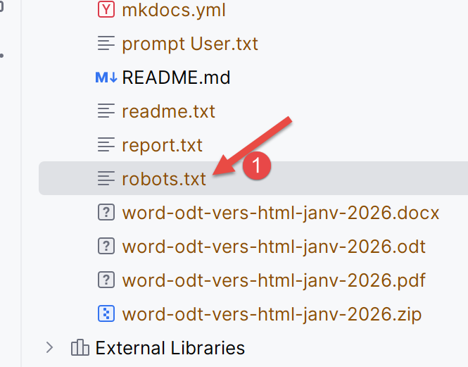
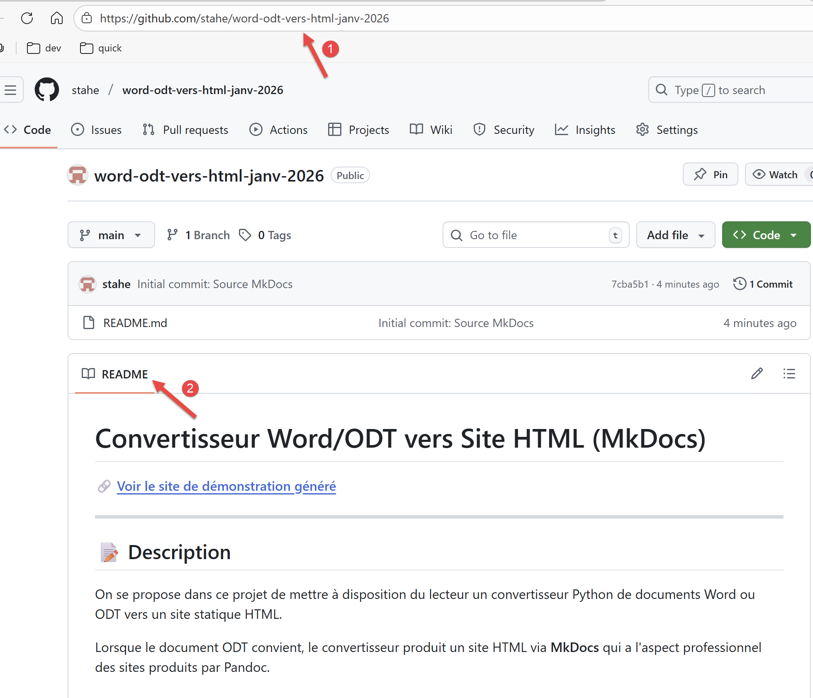
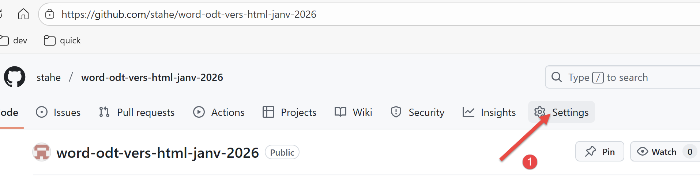

12. Alojar el sitio HTML en GitHub
Fue el propio Gemini quien me propuso alojar en GitHub el sitio HTML generado por sus dos scripts:1 . No sabía que eso fuera posible. GitHub es un sitio que aloja proyectos de desarrollo. Publicar allí cursos de programación parece lo más lógico.
Primero debes tener una cuenta de GitHub. Si es necesario, créala.
Inicie sesión en su cuenta de GitHub:
 |
- En [2], tus repositorios existentes, si los tienes;
- En [3], crea un nuevo repositorio de GitHub;
 |
- En [1], utiliza el nombre que has puesto en [config.py]:
"repo_url": "https://github.com/stahe/word-odt-vers-html-janv-2026",
- En [2], también puedes poner lo mismo que en [config.py]:
- En [3], confirma la creación de tu repositorio GitHub;
 |
Se recomienda crear un archivo [README.md] para cada repositorio de GitHub, que se mostrará en lugar de la pantalla anterior. Debe estar escrito en Markdown, algo que no es sencillo. Por lo tanto, vamos a escribir un archivo de texto con el contenido que nos gustaría ver en el README. Luego le pediremos a la IA que nos proporcione el README.md correspondiente.
El archivo de texto [readme.txt] será el siguiente:
La línea de comandos de Gemini es la siguiente:
 |
- En [1], el archivo adjunto [readme.txt];
- En [2], la indicación;
Copia la respuesta que te da Gemini en el archivo [README.md] de tu carpeta de trabajo. Esta es la respuesta que me dio Gemini:
Es un README muy completo el que me ha proporcionado. Esto se debe a que Gemini conoce muy bien este proyecto en el que llevamos trabajando semanas. Seguramente tendrás un [README.md] menos detallado.
Ahora volvamos a nuestra carpeta de trabajo:
 |
- En [2], el archivo README que acabáis de modificar;
- En [1], el archivo [deploy.txt] explica cómo exportar tu sitio HTML a tu repositorio de GitHub;
El contenido del archivo [deploy.txt] es el siguiente:
Esta es la secuencia de comandos que exportará tu sitio HTML a tu repositorio de GitHub. Tendrás que modificar la línea 7 con la URL de tu propio repositorio de GitHub, que se encuentra en el archivo [config.py]:
También debes comprobar otra URL que aparece en el archivo [robots.txt]:
 |
El contenido del archivo [robots.txt] es el siguiente:
En la línea 3, introduce la URL de tu sitio web, la misma que en el archivo [config.py]:
# URL de publicación del sitio (p. ej.: GitHub Pages)
"site_url": "https://stahe.github.io/word-odt-vers-html-janv-2026/",
El archivo [robots.txt] no se utiliza durante la compilación local del sitio, pero sí se utilizará cuando esté alojado en GitHub.
La secuencia de comandos de [deploy.txt] utiliza un software llamado Git. Debes instalarlo [Git - Install for Windows].
Una vez hecho esto, comprueba el archivo llamado [.gitignore] en tu carpeta de trabajo. Este le indica a Git qué archivos debe ignorar. Mi archivo [.gitignore] es el siguiente:
Es muy sencillo. Se ignoran todos los archivos (línea 2) excepto el archivo [README.md] (línea 5). GitHub está pensado para alojar proyectos de desarrollo. Por lo general, se exporta todo el proyecto de desarrollo a GitHub. Nosotros solo queremos exportar un sitio HTML, no un proyecto de desarrollo. El único archivo que queremos exportar a nuestro repositorio de GitHub es el archivo [README.md], que explica a los visitantes qué contiene nuestro sitio HTML.
Ahora, en tu terminal, escribe la siguiente secuencia de comandos en el orden indicado por [deploy.txt] hasta llegar al comando 8. No ejecutes el comando 9 por el momento.
PS C:\Data\st-2025\GitHub Pages\word-odt-vers-html\v2> git init
Repositorio Git vacío inicializado en C:/Data/st-2025/GitHub Pages/word-odt-vers-html/v2/.git/
PS C:\Data\st-2025\GitHub Pages\word-odt-vers-html\v2> git branch -M main
PS C:\Data\st-2025\GitHub Pages\word-odt-vers-html\v2> git add .
PS C:\Data\st-2025\GitHub Pages\word-odt-vers-html\v2> git commit -m "Commit inicial: Código fuente MkDocs"
[main (root-commit) 7cba5b1] Commit inicial: Fuente MkDocs
1 archivo modificado, 89 inserciones(+)
crear modo 100644 README.md
PS C:\Data\st-2025\GitHub Pages\word-odt-vers-html\v2> git remote add origin https://github.com/stahe/word-odt-vers-html-janv-2026.git
PS C:\Data\st-2025\GitHub Pages\word-odt-vers-html\v2> git push -u origin main
Enumerando objetos: 3, hecho.
Contando objetos: 100 % (3/3), hecho.
Compresión delta utilizando hasta 8 subprocesos
Comprimiendo objetos: 100 % (2/2), hecho.
Escribiendo objetos: 100 % (3/3), 1,70 KiB | 1,70 MiB/s, hecho.
Total 3 (delta 0), reutilizados 0 (delta 0), paquetes reutilizados 0 (de 0)
A https://github.com/stahe/word-odt-vers-html-janv-2026.git
* [nueva rama] main -> main
Rama «main» configurada para seguir «origin/main».
Haz clic con el botón derecho del ratón sobre la URL de la línea 17. Esto te llevará a tu repositorio de GitHub:
 |
- En [1], la URL de tu repositorio de GitHub;
- En [2], el nuevo README.md;
Ahora pasemos al comando 9 del archivo [deploy.txt]. Es el que exporta el sitio HTML a GitHub:
PS C:\Data\st-2025\GitHub Pages\word-odt-vers-html\v2> python -m mkdocs gh-deploy
INFO - Limpieza del directorio del sitio
INFO - Compilación de la documentación en el directorio: C:\Data\st-2025\GitHub Pages\word-odt-vers-html\v2\site
INFO - El archivo de documentación «les-exemples.md» contiene un enlace «#_Les_exemples», pero no existe tal ancla en esta página.
INFO - Documentación generada en 1,79 segundos
ADVERTENCIA - Se ha omitido la comprobación de la versión: no se ha especificado ninguna versión en la implementación anterior.
INFO - Copiando «C:\Data\st-2025\GitHub Pages\word-odt-vers-html\v2\site» a la rama «gh-pages» y subiéndolo a GitHub.
Enumerando objetos: 91, hecho.
Contando objetos: 100 % (91/91), hecho.
Compresión delta utilizando hasta 8 subprocesos
Comprimiendo objetos: 100 % (85/85), hecho.
Escribiendo objetos: 100 % (91/91), 1,64 MiB | 2,01 MiB/s, hecho.
Total 91 (delta 9), reutilizados 0 (delta 0), paquetes reutilizados 0 (de 0)
remoto: Resolución de deltas: 100 % (9/9), completado.
remoto:
remoto: Crea una solicitud de extracción para «gh-pages» en GitHub visitando:
remoto: https://github.com/stahe/word-odt-vers-html-janv-2026/pull/new/gh-pages
remoto:
A https://github.com/stahe/word-odt-vers-html-janv-2026.git
* [nueva rama] gh-pages -> gh-pages
INFO - Tu documentación estará disponible en breve en: https://stahe.github.io/word-odt-vers-html-janv-2026/
Haz clic con el botón derecho del ratón en la URL de la línea 21. Esto te llevará a tu nuevo sitio HTML en GitHub:
 |
- En [1], vemos que estás mostrando un sitio web en GitHub;
Es muy fácil equivocarse al ejecutar los comandos de [deploy.txt]. Entonces es difícil dar marcha atrás, ya que Git guarda un registro de lo que se ha hecho (mal). Para empezar de cero, visualice la carpeta de trabajo:
 |
- En [1], elimine la carpeta [.git];
Vuelve luego a PyCharm y vuelve a ejecutar la serie de comandos de [deploy.txt].
¿Qué hacer si modificas tu documento ODT / DOCX? Haz lo siguiente:
- vuelve a convertir tu documento ODT/DOCX con [convert];
- crea el sitio HTML con [build];
- Exporte el sitio HTML a GitHub con el comando [python -m mkdocs gh-deploy]. Este comando es suficiente siempre que no modifique el archivo [README.md]. Si modifica el archivo [README.md], tendrá que ejecutar algunos comandos más:
Si solo has modificado el README, solo son necesarios los comandos 1, 3 y 4. El comando 5 es innecesario si ya has desplegado el sitio HTML y no ha cambiado desde entonces.
¿Qué hacer si quieres empezar de cero porque las cosas se han descontrolado? Puedes eliminar tu repositorio de GitHub y volver a realizar todas las operaciones del capítulo12 . La opción para eliminar un repositorio de GitHub está bien escondida:
 |
- En [1], ve a la configuración del repositorio;
 |
Ve hasta la parte inferior de la página de [configuración]. Allí encontrarás el botón para eliminar tu repositorio [2].
-
Nota al pie para GitHub ↩